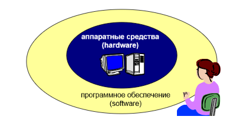

Программное обеспечение
Программное управление компьютером
Компьютер – это универсальное электронное программно-управляемое устройство, предназначенное для автоматической обработки, хранения и передачи информации.
Принцип программного управления компьютером
состоит в том, что программа состоящая из набора команд, записывается в память компьютера, а компьютер автоматически исполняет эту программу.
Программа — это заранее заданная, четко определённая последовательность арифметических, логических и других операций.
Компьютер обрабатывает информацию, исполняя программы, которые разрабатываются человеком и вводятся в память компьютера.
Программное обеспечение
Взаимодействие человека с компьютером
-
Прикладное ПО – программы, которые пользователь использует для
решения своих задач
- текстовые редакторы
- текстовые редакторы
- базы данных …
-
Системное ПО – обеспечивает взаимодействие пользователя и прикладных
программ с аппаратными средствами
- операционные системы
- драйверы
- утилиты
- Системы программирования – средства создания новых программ.
- Программы пользователей – пользователи составляют их для своих собственных нужд.
ПО для работы с текстом
-
Текстовые редакторы – для редактирования текстовых документов без
оформления
- Блокнот – файлы *.txt
-
Текстовые процессоры – для редактирования текстовых документов
- WordPad – файлы *.doc (текст + рисунки)
- Word – файлы *.doc, *.docx (текст + рисунки + таблицы + автофигуры + диаграммы …)
- OpenOffice Writer – файлы *.odt
-
Графические редакторы
- Paint – файлы *.bmp (также *.gif, *.jpg)
- Adobe Photoshop – файлы *.psd
- Gimp
- Paint.NET
- CorelDraw – файлы *.cdr
- Adobe Illustrator – файлы *.ai
- Inkscape
- OpenOffice Draw
- Редакторы видео (файлы *.avi, *.mpg, *.wmv)
- Movie Maker (в составе Windows)
- Pinnacle Studio
- Adobe Premier
- Издательские системы – для подготовки печатных материалов (газет, книг, буклетов)
- Microsoft Publisher
- QuarkXPress
- Adobe InDesign
- Scribus
Офисное ПО
- Электронные таблицы – для выполнения расчетов с табличными данными
- Microsoft Excel – файлы *.xls, *.xlsx
- OpenOffice Calc – файлы *.ods
- Системы управления базами данных
- Microsoft Access – файлы *.mdb, *.accdb
- OpenOffice Base – файлы *.odb
-
Создание презентаций
- Microsoft PowerPoint – файлы *.ppt, *.pptx
- OpenOffice Impress – файлы *.odp
ПО для работы в Интернете
- Браузеры – для просмотра Web-страниц на экране
- Internet Explorer – бесплатно
- Mozilla Firefox – бесплатно
- Opera – бесплатно
- Safari – бесплатно
- Chrome – бесплатно
-
Почтовые программы – прием и отправка e-mail
- Microsoft Outlook Express (в составе Windows)
- Microsoft Outlook
- TheBat
- Mozilla Thunderbird
Какие бывают программы?
- Свободное ПО с открытым исходным кодом (Open Source): можно бесплатно
- запускать и использовать в любых целях
- изучать текст программы
- распространять (бесплатно или за плату)
- изменять код (развитие и усовершенствование)
-
Бесплатное ПО (Freeware): можно бесплатно использовать; исходного кода нет; есть ограничения на:
- коммерческое использование
- изменение кода
- извлечение данных
-
Условно-бесплатное ПО (Shareware): бесплатное ПО с ограничениями:
- отключены некоторые функции
- ограничен срок действия (30 дней)
- ограничено количество запусков
- раздражающие сообщения
- принудительная реклама
-
Коммерческое ПО:
- плата за каждую копию
- бесплатная техническая поддержка
- запрет на изменение кода и извлечение данных
- быстрое внесение изменений (сервис-паки, новые версии)
Использование программ
Основания:
- договор в письменной форме
- при массовом распространении – лицензионное соглашение на экземпляре
Можно без разрешения автора:
- хранить в памяти 1 компьютера (или по договору)
- вносить изменения, необходимые для работы на компьютере пользователя (но не распространять!)
- исправлять явные ошибки
- изготовить копию для архивных целей
- перепродать программу
Операционные системы
Операционная система (ОС) – это комплекс программ, обеспечивающих пользователю и прикладным программам удобный интерфейс (способ обмена информацией) с аппаратными средствами компьютера.
Функции ОС (что она обеспечивает):
- обмен данными с внешними устройствами
- запуск и выполнение остальных программ
- тестирование компьютера, обработка ошибок
- распределение ресурсов (процессор, память, внешние устройства)
Типы OC
Однопользовательские – в каждый момент с компьютером работает один пользователь, он получает все ресурсы компьютера.
Однопользовательские – в каждый момент с компьютером работает один пользователь, он получает все ресурсы компьютера.
Утилиты, не входящие в ОС
- антивирусные программы
- архиваторы – программы для упаковки файлов
- информация о системе
- сканирование
- программы для записи CD и DVD